2002.12.16–21 河内スタヂオ録音
Inspiration
大野めぐみ大野めぐみ (vo) / 宮之上貴昭 (g) / 山田穣 (as) / 稲垣護 (b) / 太田耕平 (ds)
About the Album
作品紹介
「INSPIRATION」
数々の才能を送り出してきた、宮之上貴昭が全面プロデュース。
伸びやかなボーカルと強力なグループ。
極上デビューアルバム
大野めぐみ （ｖｏ)
宮之上貴昭(g) 山田穣(as)
稲垣護(b) 太田耕平(ds)
￥３，０００
（CD代、税込み）
購入先はこちら>>>Megu’s Online Shop
1. Speak low. 2.Social call. 3. The nearness of you. 4. Music in the air. 5. Wave.
6. Our love is here to stay. 7. Inspiration. 8. I didn’t know time it was. 9. Honeysuckle rose.
10. Taking a chance on love. 11. They can’t take that away from me. 12. Little girl blue.
13. You took advantage of me. 14. You’re getting to be habit with me. 15. Minor catastrophe.
Recording Report
レコーディングレポート
大野めぐみ レコーディング
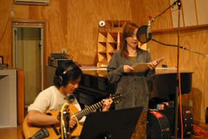
12/16 秋田空港 16：30着 河内スタジオには17：30到着
河内スタヂオには無くてなならない存在宮之上貴昭氏とのつきあいはかれこれ4半世紀にもなる。
河内スタヂオでの初レコーディングは1999年2月 宮之上貴昭 「Me,Myself & I」であった。
このアルバムを聴いて気に入ってくださった色々なミュージシャンの方々が河内スタヂオを使ってくれるようになった。いわば河内スタヂオの育ての親といってもいい宮之上氏の2年ぶりのレコーディング。
しかも 宮之上氏一押しのチャーミングな歌姫大野めぐみさんを率いてとあって、河内スタヂオスタッフ一同は心躍らせて待っていた。
先ずはいつのも様に Welcome飲み会（？）と思いきや、すぐにセッティングしてレコーディングを始めるという。今回は「時間との戦い」だそうだ。いつもとはちょっと気合い、意気込みが違う。
音取りが終わって 2階の居間で一杯 という時でも 宮之上さんはギターを持っている。今まで2階にギター持ってきたことあったっけ？なんだかとても素晴らしいアルバムが出来そうな予感がした。
宮之上プロデューサーと稲垣 護氏と太田 耕平氏と羽田から秋田へ向かう。
秋田空港へ着くと辺りは暗く、河内スタヂオの河内 伸介氏が迎えに来て下さっていた。
早速、楽器を積み込みスタヂオへ向かう。河内氏は宮之上Pの昔からの友人で、２年ぶりの再開ということもあり、のっけから会話がはずむ。
私は、緊張と不安とで言葉数も少なく２人の面白い会話への反応もおとなしめだった。 空港へ来る途中で河内氏が「今夜の酒の肴を仕入れたからまずは一杯かな？」… と、甘～い誘惑で宮之上氏をくすぐるも、宮之上氏は…
「いや、時間がないからすぐセッティングして録るよ。」といった。
またまた、私の気が引き締まる。
そして、スタヂオに到着。 その設備の凄い事！ 見たこともない大きさのスピーカー。広～いスタヂオ。ピカピカの御家…。奥様の敬子さんにもご挨拶を済ませ、お部屋へ案内してもらったが、広すぎて迷子になってしまった。慣れるまでに半日かかった。
宮之上P達が楽器をセッティングしている間、河内氏は買ってきた魚をおろしたり、〆たり…。（踊って、作れるエンジニアだそうだ…。）
スタヂオ関係者の田中氏、堤氏も加わり宴の準備が進む中、早速サウンドチェックが始まった。
（めぐみ） *大野めぐみホームページより抜粋
まずは2階でちょっと1杯
到着早々、リビングのキーボードでフレーズのチェック
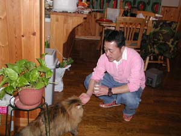
河内スタヂオのアイドル「さーちゃん」と遊ぶ稲垣さん
もうすでに堤君は鴨を焼く準備をしているし、河内君は美味そうな魚を仕入れています。
どうしよう！今夜のうちに少しレコーディングを進めとこうと思ったんだけど・・・
誘惑の甘い罠が・・だめだめ！一杯飲むのは一段落してから！と、自分に言い聞かせている初日です。
これだから河内スタヂオは最高なんです。（宮）
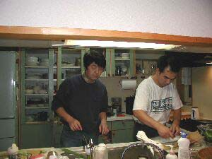
新鮮な魚をおろしてくださる。エビチリソースが得意の田中さんと 河内スタヂオ代表の河内伸介さん
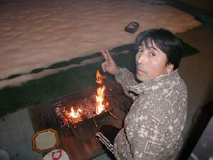
雪の中真鴨のバーベキューを焼いてくださる アシスタントヘルニア（？）の堤さん
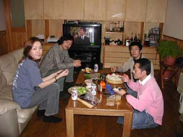
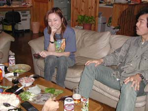
今夜は手巻き寿司！ 大野ご満悦～～～～！
スタジオでレコーディング開始！
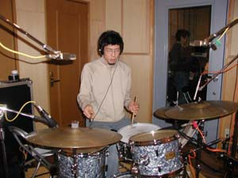
早稲田出身…→ イニシャルは K．O
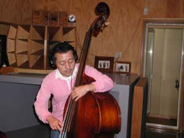
まもリン
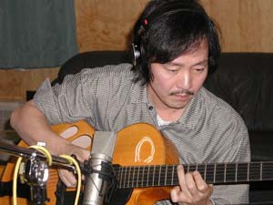
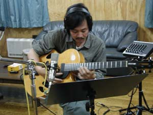
みやリン
今日のレコーディングはおしまい。 その後2階で打ち合わせ。
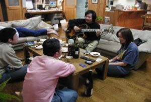
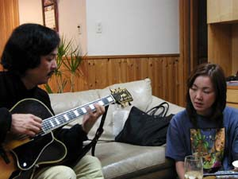
殿 「やっぱ、ここは こうだろう…」
17日 2日目 午前11時より レコーディング開始
この日は、朝から（といっても、午後…）ず～っと、録音。
でも、わりとすんなりいって あっという間にまた宴へ…。
明日は、山穣さんと「よぴえぱん」さんが到着します。（大野めぐみ）
*大野めぐみホームページより抜粋
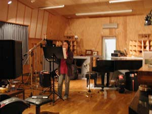
さぁ、録音開始です！
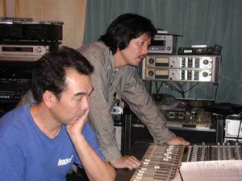
宮之上プロデューサー ん～いいぞ
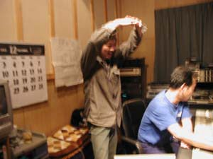
はい OKです
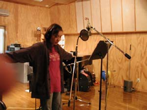
リラックス、リラックス…
レコーディング二日目。
大野めぐみは僕の予想以上に歌ってくれて、関係者をうならせていました。
とてもいいＣＤが出来そうですので期待して下さいね。
明日朝には山田穣が参加します。より強力な音になります！（宮）
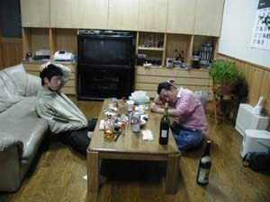
おまけ そのころ2人は出番待ち
太 「もう、帰りましょうよ…稲垣さん…」
稲 「俺、帰んない…」
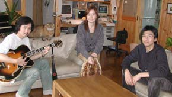
宮之上P&山田J氏＆S（？）＆大野
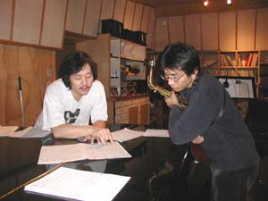
打ち合わせ中…
12/18 山田穣さん・よぴえぱん到着
おはようございます！レコーディング３日目に入りました。
さっき「飛行機に乗り遅れた」と山田穣から連絡がありました。
奇しくも九州から来る「よぴえぱん」と同じ飛行機になりました。
(･`ω´･)BUBU (宮）
大野めぐみ(vo)&スモーキン・宮之上貴昭(g)稲垣護(b)太田耕平(ds)＋山田穣(as)（敬称略）の録音を見学するために、北九州を早朝に出発。秋田は雪も殆どなく、そんなに寒くなかった。
八郎潟は大干拓地で、海抜０ｍ以下の場所らしい。延々とまっすぐな道が数キロ続き、何だか外国みたいで気持がいい。春には桜並木となるそうだ。お昼頃に、河内スタヂオさんに到着。
「うわーっ。どうしてこんな田舎にこんな建物が…。」（失礼）
さっそくレコーディング見学でスタヂオに行って更に驚愕した。ＨＰで拝見してはいたもののこんなに凄いとは。機材音痴の私にも、その場所に鎮座する機材・設備・建材の凄さは理解出来た。ここで、Vincent Herring(as)も録音したんだっけ…。
（河内スタヂオ見学レポート よぴえぱん）
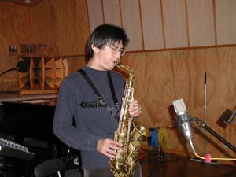
超強力ゲスト！！「山田 穣」さん
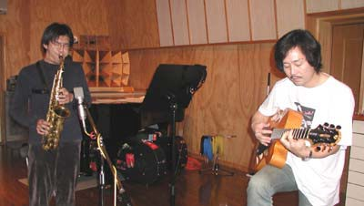
さぁ、今日は山穣さんも加わってハードになるぞぉ！
省略形で失礼致しました。 山田 穣さんとは伊藤 実千代さんのアルバム録音の時に、チラッと面識がありました。音楽に対する姿勢のまじめさに脱帽したことを覚えています。
そして、とても謙虚で自分に厳しく他人に優しい人間性も印象的でした。 久々にお会いしてやはりその通りの方だと再確認しました。(めぐみ）*大野めぐみホームページより抜粋
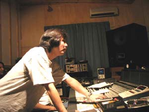
宮 「そこ、もうちょっとゆったりな…」
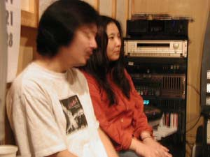
見学レポートを書いてくださった よぴえぱん
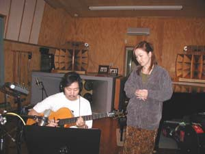
デュオの打ち合わせ中
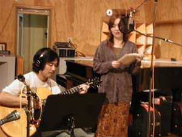
♪「You’re getting to be a habit with me」
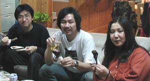
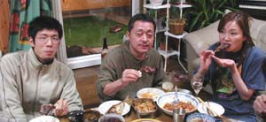
またまた宴会？
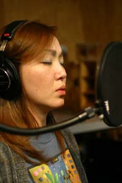
12/19 午後4時までレコーディング 夜は秋田市カフェラテでライブ
12/20～21（朝） マスタリング
大野めぐみさんが歌われた曲を聴いてまたまた驚き。普段ボーカルの方がまず歌わないような難曲がたくさんあった。難しいコード進行でのスキャットでテーマをユニゾンしている宮之上さんも凄い。
叉、入りの拍をズラした曲は何とも不思議な感じ。宮之上さんのカッコいいアレンジが散りばめられた曲が次々と登場。
スモーキンの息はピッタリで、ゲストの山田穣さんも一発OK続出という素晴らしさ。限られた時間とはいえ、比較的時間をかけエンジニアとミュージシャンがリラックスして良い物を作り上げて行く。音を楽しむという音楽の原点を見たような気がした。
20日の朝、全員帰京の予定だったが、宮之上氏、めぐみさんは急遽滞在を1日延期してマスタリングをする事になった。
4日間のレコーディング疲れもピーク、マスタリングは始めたのが午後になってからのせいもあり、徹夜の作業となった。
そこからの作業は私にはさっぱり解からない・・・。殿と河内さんで色々細かくチェックして音が決まっていく。といっても、私にはやはり解からない・・・。
それは音の職人、河内さんの腕の見せ所です。そうして１曲が決まると後はすんなり進んでいく・・・。といっても全１５曲。大変な作業だ・・・。 （めぐみ）*大野めぐみホームページより抜粋
マスタリング終了は２１日の朝７時。大野めぐみさんの誕生日で、リビングで出来あがったCDを感涙ながらも静かに聴いている姿は胸を打った。
ソファーでは河内さんが、倒れ込むように爆睡していた。（河内スタヂオ見学レポート よぴえぱん）
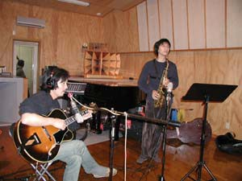
宮之上貴昭さん 山田穣さん
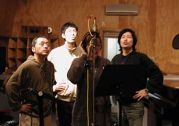
不良中年コーラス隊
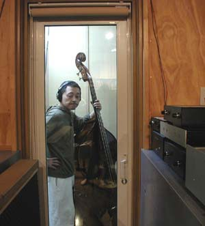
稲垣さん at ブース
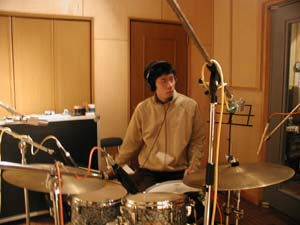
耕平さん at ブース
秋田市 カフェラテにて ライブ
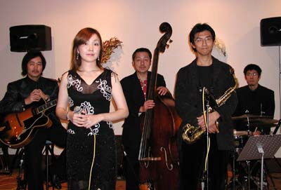
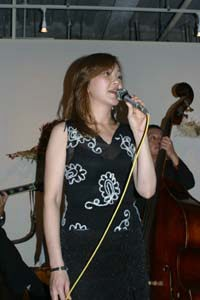
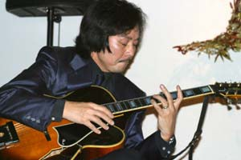
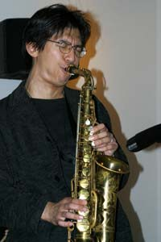
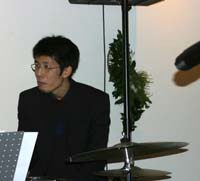
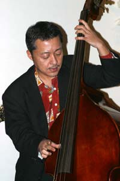
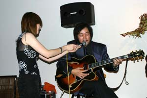
大野の心の声
「うゎっ！あたし、スキャットできないよッ…、ふふ～ん、殿に振っちゃえ！」
宮 心の声
「わぁっ！なんだ大野いきなり振りやがって！後で覚えてろよッ！」
そのわりには、とても楽しそうにスキャットしていた宮之上Pであった。